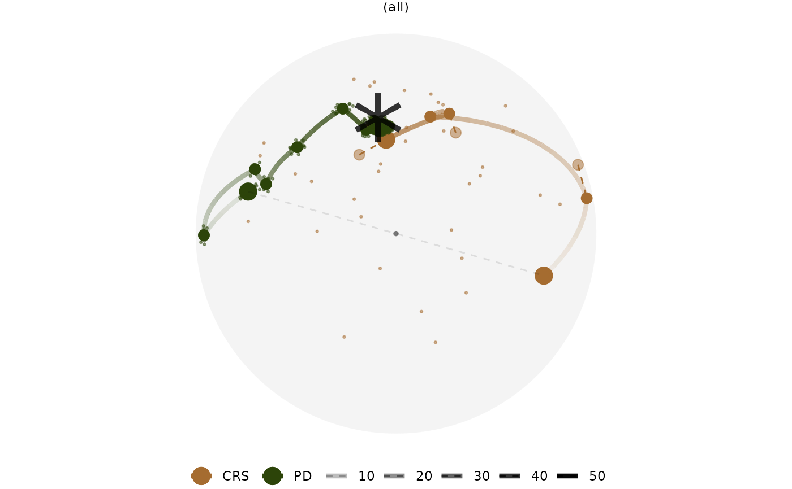

R/explore_space.R
explore_space_pca.RdThe set of functions returns a primary ggplot object
that plots the data object in a space reduced by PCA.
compute_pca() computes the PCA and explore_space_pca() does the plotting.`
explore_space_pca( dt, pca = TRUE, group = NULL, color = NULL, ..., animate = FALSE )
| dt | A data object from the running the optimisation algorithm in guided tour |
|---|---|
| pca | Boolean, if |
| group | The grouping variable, useful when there are multiple algorithms in the data object |
| color | A variable from the object that the diagnostic plot should be colored by |
| ... | different argument passed to |
| animate | Boolean, if the plot should be animated |
Other plot:
explore_trace_interp(),
explore_trace_search(),
prep_space_tour()
dplyr::bind_rows(holes_1d_geo, holes_1d_better) %>% bind_theoretical(matrix(c(0, 1, 0, 0, 0), nrow = 5), index = tourr::holes(), raw_data = boa5 ) %>% explore_space_pca(group = method) + scale_color_botanical(palette = "cherry")#> Called from: explore_space_pca(., group = method) #> debug: group <- enexpr(group) #> debug: if (is.null(group)) color <- enexpr(color) else color <- group #> debug: color <- group #> debug: if (pca) { #> dt <- compute_pca(dt, group = !!group) %>% purrr::pluck("aug") #> } #> debug: dt <- compute_pca(dt, group = !!group) %>% purrr::pluck("aug")#>#> debug: dt <- dt %>% clean_method() #> debug: p <- ggplot() + add_space(dt = get_space_param(dt), ...) + add_center(dt = get_center(dt), #> ...) + add_start(dt = get_start(dt), start_color = !!color, #> ...) + add_anchor(dt = get_anchor(dt), anchor_color = !!color, #> ...) + add_search(dt = get_search(dt), search_color = !!color, #> ...) + add_dir_search(dt = get_dir_search_transformed(dt, #> ...), dir_color = !!color, ...) + add_finish(dt = get_interrupt_finish(dt, #> group = !!group), finish_color = !!color, ...) + add_interp(dt = get_interp(dt, #> group = !!group), interp_alpha = !!sym("id"), interp_color = !!color, #> interp_group = !!group, ...) + add_interrupt(dt = get_interrupt(dt, #> group = !!group), interrupt_color = !!color, interrupt_group = !!sym("tries"), #> ...) + add_anno(dt = get_start(dt), ...) + scale_alpha_continuous(range = c(0.3, #> 1), guide = "none") + theme_void() + theme(aspect.ratio = 1, #> legend.position = "bottom", legend.title = element_blank())#>#> Called from: get_interrupt(dt, group = !!group) #> debug: group <- enexpr(group) #> debug: if (any(unique(dt$method) %in% c("simulated_annealing", "search_better", #> "search_better_random"))) { #> dt <- dt %>% filter(dt$method %in% c("simulated_annealing", #> "search_better", "search_better_random")) #> anchor <- dt %>% get_anchor() #> interp_last <- dt %>% get_interp_last(group = !!group) #> interp_anchor <- dplyr::bind_rows(anchor, interp_last) #> problem_tries <- interp_anchor %>% dplyr::group_by(!!group) %>% #> dplyr::select(.data$info, .data$index_val, .data$tries) %>% #> tidyr::pivot_wider(names_from = .data$info, values_from = .data$index_val) %>% #> mutate(match = ifelse(abs(round(.data$new_basis, 3) - #> round(.data$interpolation, 3)) > 0.01, TRUE, FALSE)) %>% #> filter(match) %>% pull(.data$tries) #> interp_anchor %>% dplyr::arrange(.data$tries) %>% filter(.data$tries %in% #> problem_tries) #> } else { #> message("interrupt is only implemented in simulated annealing methods") #> return(NULL) #> } #> debug: dt <- dt %>% filter(dt$method %in% c("simulated_annealing", "search_better", #> "search_better_random")) #> debug: anchor <- dt %>% get_anchor() #> debug: interp_last <- dt %>% get_interp_last(group = !!group) #> debug: interp_anchor <- dplyr::bind_rows(anchor, interp_last) #> debug: problem_tries <- interp_anchor %>% dplyr::group_by(!!group) %>% #> dplyr::select(.data$info, .data$index_val, .data$tries) %>% #> tidyr::pivot_wider(names_from = .data$info, values_from = .data$index_val) %>% #> mutate(match = ifelse(abs(round(.data$new_basis, 3) - round(.data$interpolation, #> 3)) > 0.01, TRUE, FALSE)) %>% filter(match) %>% pull(.data$tries)#>#> debug: interp_anchor %>% dplyr::arrange(.data$tries) %>% filter(.data$tries %in% #> problem_tries) #> debug: if ("theoretical" %in% dt$info) { #> p <- p + add_theo(dt = get_theo(dt), ...) #> } #> debug: p <- p + add_theo(dt = get_theo(dt), ...) #> debug: if (animate) { #> p <- p + theme(legend.position = "none") + gganimate::transition_states(!!sym("id")) + #> gganimate::shadow_mark() #> } #> debug: p